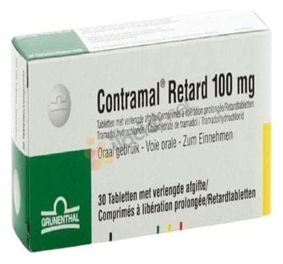

Contramal Retard 100 mg Film Kaplı Tablet, 30 Adet

Ne için kullanılır
KT · Bölüm 1CONTRAMAL RETARD 10 ve 30 film kaplı tabletlik blister ambalajlarda sunulur. CONTRAMAL RETARD’ın etkin maddesi tramadol ağrı kesici olan opioid adı verilen bir ilaç sınıfına aittir. Santral sinir sistemine etki eden bir ağrı kesicidir. Omurilik ve beyinde özel sinir hücreleri üzerine etki göstererek ağrıyı giderir.
CONTRAMAL RETARD orta veya şiddetli ağrıların tedav isinde kullanılır. Opioidler bağımlılığa neden olabilir ve aniden almayı bırakırsanız yoksunluk belirtileri yaşayabilirsiniz. Reçetenizi yazan kişi, ilacı ne kadar süreyle alacağınızı ve ne zaman bırakmanın uygun olduğunu, bunu nasıl güvenli bir şekilde yapacağınızı açıklamalıdır.